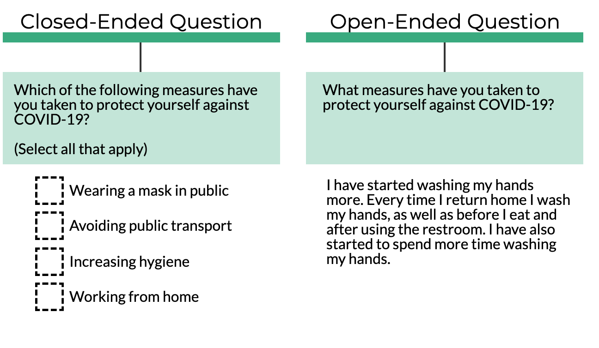
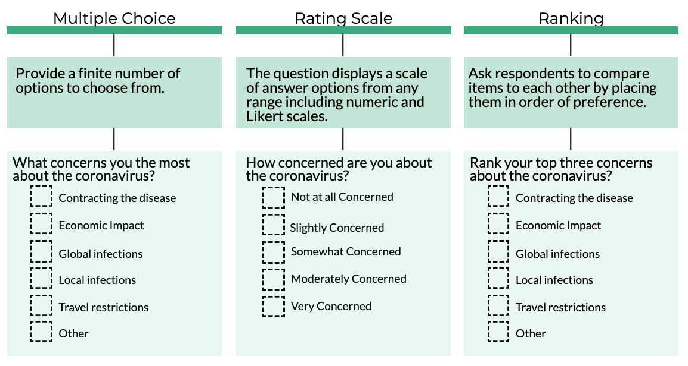

Quick Tips for Good Questions
Examples from the COVID-19 Pandemic
Created by OCHA's Centre for Humanitarian Data / @humdata
Press right on your keyboard or swipe left to navigate.
All data exercises start with a question. Questions drive our data collection, focus our analysis and shape our visual design choices. In this lesson, we will get back to basics in order to learn the art of good questions.
This session includes a series of slides to build your knowledge, a set of five xx videos to demonstrate xx and a short quiz to test your knowledge. The expected length of time to complete all segments is 25 minutes.
In this introductory session to formulating questions using examples from the COVID-19 pandemic, you will learn:
- best practices for designing data collection questions;
- how identify different question types; and
- put these concept to practice by designing a data collection forms in Excel.
The Role of Questions
We Ask Questions to Frame and Collect
We formulate questions to frame our data exercises. These framing questions can be thought of as our research question. They help define the data we need and guides our entire process. Data-driven insight starts with good framing questions.
We also ask questions to gather data. These types of questions help us bring together the data we need to answer our framing question. How we ask these question shapes the answers we get and therefore the resulting data. High quality data start with good data collection questions.
Asking the Question Right
Questions for Data Collection
When the data we need to answer our framing question does not exist, we may have to collect it ourselves.
In this section, we will focus on fine-tuning our data collection questions to ensure that we get the data we need.
Getting to a Data Collection Question
“What are community perceptions about transmission of COVID-19?”. If we look at one dimension of community perceptions (preventative measures) and one indicator (handwashing frequency), one measure for answering this question is the number of times people wash their hands per day. We can collect this data by asking a similar question in a number of different ways. Each question will result in slight different data.

Collecting the Data We Need
Different data collection questions yield different data. The wording, response options & prompt and question type all influence the data you produce. This has implications for the type of analysis you can do. with that data.
Anatomy of a question
Data collection questions have three distinct components, all of which influence the data you will collect.
- The wording of the question influences the answer. To collect accurate data, make sure you use clear terminology, that your question is measuring what it intends to measure, and that the question is answerable and unbiased.
- The response options to the question will shape the data you collect and what you can do with the data. How the question can be answered ranges from structured to unstructured.
- The prompts are directions provided to respondents on how to answer the question you asked. These instructions are useful in preventing respondent errors.
Question Types
Broadly speaking, during a data collection exercise, there are two types of questions that you can: open-ended and closed-ended questions. By understanding the difference between the two, you can learn to ask better questions and get better, more actionable data. This is evidenced in the expample below.
Understanding Open-Ended Questions
Open-ended questions give your respondents the opportunity to answer in their own words, instead of limiting their response to a set of pre-determined answers. Examples include:
- How do you think COVID-19 is transmitted?
- How do you think the situation with COVID-19 will evolve in the next three months?
Note: It is often common to include an open-ended response option of “Other, Specify” in closed-ended questions.
Using Open-Ended Question Data
Opened-ended questions result in unstructured data. This type of data can be rich with information impossible to gather through closed-ended questions. Open-ended questions help you learn about respondent needs you did not know existed and can help focus attention on topics you had not considered.
The drawbacks of opened-ended questions is that unstructured data often takes longer to analyse and has limitations in terms of the analytics that can be performed.
Understanding Closed-Ended Questions
Close-ended questions produce structured data. This makes it easier to collect, clean and perform quantitative analysis. Below are a few types of closed-ended questions.
Structured Response Options
Close-ended questions have an expected pointed response. The data you get back (e.g. level of precision on answers, standardization, etc.) will depend on the response options available and permitted, and the prompts or guidance provided.
- Multiple Choice Single-Select & Multi-Select;
- Ranking
- Rating Scales
Multiple Choice Single-Select & Multi-Select
One of the differences between types of multiple choice questions is whether to let respondents choose multiple response options or just one.

Data Types
Depending on how you ask a question, you will produce different types of data. We will explore two broad categories of data. Categorical data is qualitative and can either be nominal or ordinal. Numerical data is quantitative and can either be interval or ratio.

Nominal Data Questions
Categorical nominal data is data that has two or more categories that do not have an intrinsic or logical order. Countries, gender and humanitarian sectors are all examples of this type of data. Categorical nominal data questions present respondents with predefined response options that are non-numeric in nature.

Nominal Data Analysis
With nominal data, we can calculate frequencies (how often each category occurs) and would use the mode as the measure of central tendency. The nominal data can be grouped together into categories, and for each category, the frequency or percentage can be calculated. The data can also be presented visually, such as by using a pie chart.
Ordinal Data Quesitons
Ordinal data is categorical data in which the categories can be arranged in a meaningful order. To remember the difference, think ordered for ordinal and named for nominal. One important caveat is that on an ordinal scale, the order of response categories is significant but you cannot quantify the exact difference between each category.

Ordinal Data Analysis
If you have ordinal data you can calculate the frequencies and percentage for the different categories. For the measure of central tendency you can use both the mode and the median. Bar charts are great for visualising ordinal data.
ADD AN EXAMPLE
Numerical Data
Numerical data can either use an interval or ratio scale.
- Interval values can be ordered, and the distance between each number is meaningful but arbitrary. Think of interval scales as scales created by humans where there is no true zero. This type of data is not very common in the humanitarian sector, but examples include time, temperature and oedema.
- Ratio values can be ordered, and the distance between each number has meaning. Importantly, for ratio values the value of zero is meaningful (i.e. zero means a complete absence). Examples are age, household size, height and weight. This is the most versatile data in terms of statistical calculations that can be performed.
Ratio Data Analysis
Ratio data is what we commonly think of when we think about numerical data. The number of people in need, number of confirmed cases of COVID-19 and age are all examples of ratio data. In data collection forms, collecting clean ratio data means using data validation and prompts to gather a specific-response.
Statistically, this data is the most versatile.
- You can calculate the mode, median and mean.
- You can add and subtract the values.
- You can multiply or divide the values.
How to Create a Data Collection Form in Excel
Putting it into Practice
In this section we will focus on how you can use simple features in Excel to add data validation, prompts and error messages in spreadsheet data collection forms. Taking these simple steps will improve your forms and ensure that your data questions result in high-quality data.
How to Format the Question Text
How to Add Question Prompts
How to Add Question Alerts
How to Add Data Validation: Dates & Time
How to Add Data Validation: Numbers
How to Add Data Validation: Text
How to Format Multiple Choice Questions